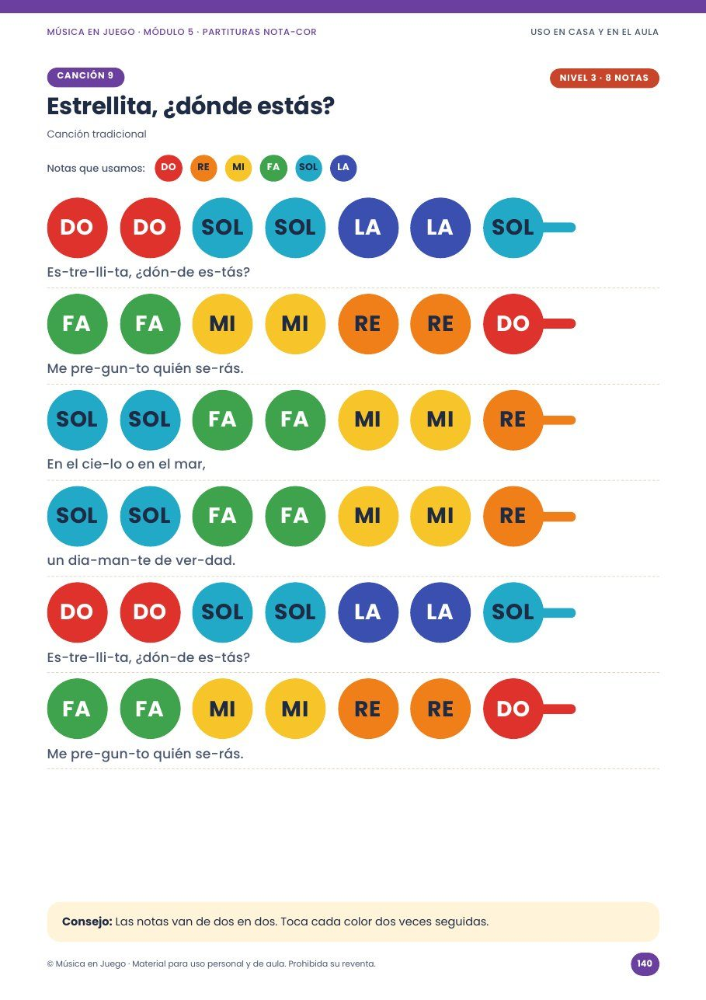
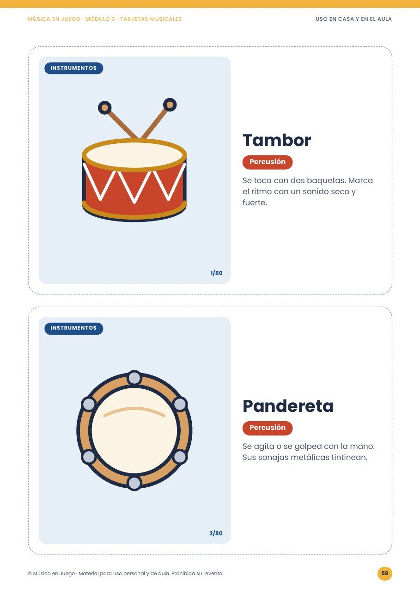
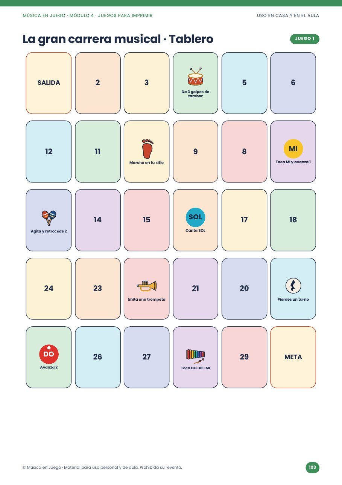
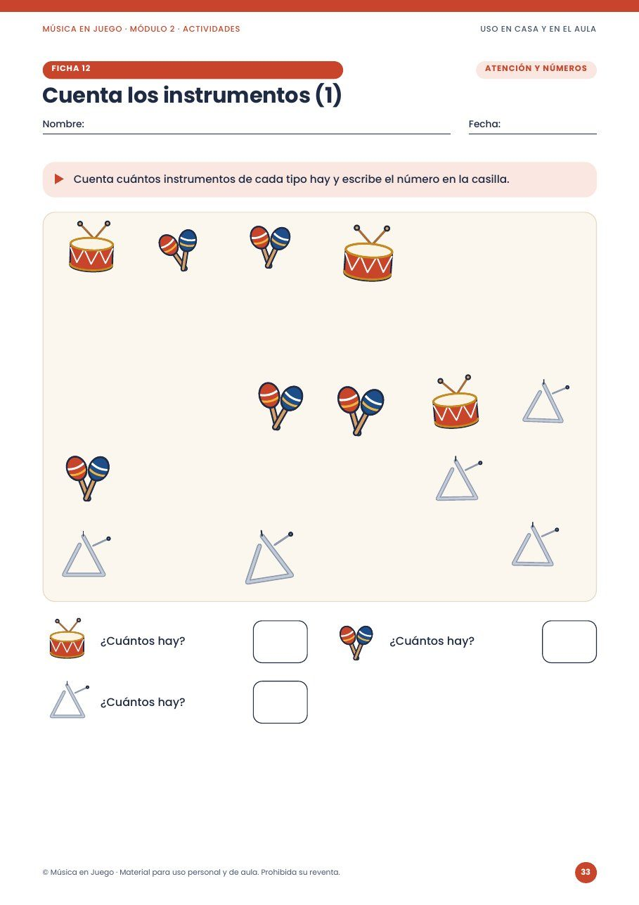
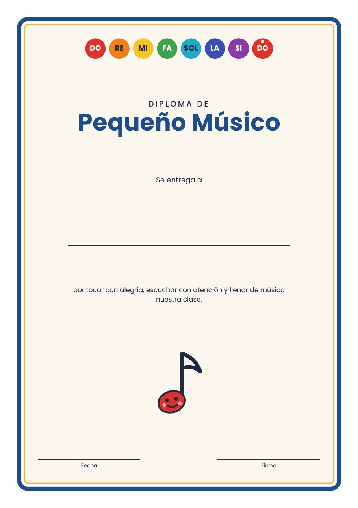

Con el método Nota-Cor, cada nota tiene un color. El niño mira el color y toca. Tú solo imprimes y entras en clase.
La clase de música empieza a las 10.
Y tú sigues en Pinterest, pasando idea tras idea.
Eliges cualquiera. Entras en clase. Pones una canción y pides palmas.
Cinco minutos después, media clase está en el suelo.
La otra mitad pregunta cuándo se acaba.
Y la semana que viene, vuelta a empezar.
Dentro de un año, si nada cambia, estarás en el mismo jueves, a las 9:40, en el mismo Pinterest.
Te dijeron que la música empieza por la teoría: el nombre de las notas, el pentagrama, el compás.
Pero un niño de 3 a 8 años no aprende leyendo símbolos. Aprende tocando, moviéndose, equivocándose y volviendo a intentarlo.
Por eso quitamos la partitura del camino. Así nació el método Nota-Cor:
Más de 150 páginas en 5 módulos. Llega en PDF a tu email. Imprimes solo lo que vas a usar hoy.
Esto es exactamente lo que llega a tu email.





“Mis hijos antes se aburrían con las actividades de música, pero ahora son ellos quienes me piden sacar las fichas y jugar. ¡Les encanta!”
“Es un recurso fantástico para trabajar el ritmo y reconocer los instrumentos. Las actividades son variadas y muy fáciles de preparar.”
“Me ha facilitado muchísimo las clases. Tengo actividades preparadas para diferentes momentos y los niños aprenden mientras se divierten.”
“Lo que más me gusta es que los niños pueden aprender música jugando, sin sentirse obligados a estudiar. Una forma preciosa de acercarlos a la música.”
“Mi hija ha empezado a reconocer los colores, los sonidos y los instrumentos de una manera muy divertida. ¡Pasamos un rato estupendo juntas!”
207 páginas listas para imprimir. La música de tu clase resuelta para todo el curso.
Una clase particular de música infantil: entre 15 y 40 € la hora. Aquí: 24 sesiones para toda la clase.
El Pack de Navidad solo se incluye de regalo hasta el 24 de diciembre. Después de Navidad deja de tener sentido y sale de la oferta.
Está hecho justo para ti. Con el método Nota-Cor no lees partituras: sigues los colores junto con los niños.
Sirven las palmas, los botes, las cucharas y cualquier juguete que suene. Si quieres, basta con un xilófono de juguete sencillo.
Sí. Los juegos y las tarjetas de ritmo están pensados para grupos grandes, y puedes imprimir todas las copias que necesites para tu clase.
Por eso vienen las 24 sesiones listas. Abres la sesión de la semana, imprimes las páginas indicadas y entras en clase.
No. Pagas una vez y el material es tuyo para siempre.
En cuanto se confirma el pago, te llega un email con el enlace al PDF. Si no lo ves, revisa el spam o la pestaña de promociones.
P.S. Si has bajado directamente hasta aquí: son más de 150 páginas y 24 sesiones listas para dar música aunque no sepas tocar. 8,90 €, pago único, garantía de 7 días. Quiero mis clases listas.
Este sitio no forma parte de Facebook ni de Meta Platforms, Inc., ni está respaldado por ellos de ninguna manera. Facebook e Instagram son marcas registradas de Meta Platforms, Inc. Cada niño aprende a su ritmo: los testimonios reflejan la experiencia real de quienes usan el material, pero los resultados pueden variar de una clase o familia a otra.